R2BEAT Optimization of precision constraints
2026-01-30
Source: vignettes/CVs_optimization.Rmd
CVs_optimization.RmdIntroduction
In a multivariate stratified sampling design procedure, very often the values of the precision constraints (expressed in terms of maximum expected coefficients of variation set on the target estimates) are set taking into account the budget constraints that oblige to a given affordable sample size. This implies that an expert has to fine tune the precision constraints (increasing and decreasing them) until a satisfactory set is determined. When the number of variables and/or domains is not small, this job can be very expensive. To handle this issue, a new function, the “pareto” one, has been developed, in order to determine an optimal solution in terms of precision constraints, given the affordable sample size.
Another issue is related to the characteristics of the allocation of sampling units in the strata: it may happen that it can be very different from the proportional one. In some cases it may be desirable to limit the distance between the two allocations, avoiding the cases of too much oversampling in small strata. It is possible to obtain this, also in this case by changing the precision constraints. To get this result, it is possible to make use of a genetic algorithm, that explores the space of the possible combinations of values of the precision constraints, with the aim of maximizing the coefficient of correlation of the two distributions (optimal and proportional allocations).
Setting
In this study, we assume that the affordable sample size (given the budget) is set to 50,000. We show how it is possible to start from a “neutral” set of precision constraints (equal CVs for all variables for a given domain level), and modify them, so to:
first, balance the influence of all the variables on the determination of the best allocation, or at least, to avoid that only a small fraction plays a role;
secondly, get the optimal allocation closer to the proportional one.
We consider a strata dataframe containing information on labor force in a country. Each stratum belongs to three different domain levels:
load("strata.RData")
# strata$DOM3 <- NULL # de-comment if you want to execute on 2 domains
str(strata)## 'data.frame': 24 obs. of 18 variables:
## $ STRATUM : chr "north_1_3" "north_1_4" "north_1_5" "north_1_6" ...
## $ stratum_label: chr "north_1_3" "north_1_4" "north_1_5" "north_1_6" ...
## $ DOM1 : chr "National" "National" "National" "National" ...
## $ DOM2 : Factor w/ 3 levels "north","center",..: 1 1 1 1 1 1 1 1 2 2 ...
## $ N : num 92780 105327 200757 53612 102907 ...
## $ M1 : num 0.748 0.776 0.782 0.776 0.757 ...
## $ M2 : num 0.227 0.203 0.199 0.203 0.21 ...
## $ M3 : num 0.0252 0.0214 0.0192 0.0211 0.0329 ...
## $ M4 : num 29464 29364 27095 25726 27749 ...
## $ S1 : num 0.434 0.417 0.413 0.417 0.429 ...
## $ S2 : num 0.419 0.402 0.399 0.402 0.407 ...
## $ S3 : num 0.157 0.145 0.137 0.144 0.178 ...
## $ S4 : num 29839 27542 23575 19557 24520 ...
## $ CENS : num 0 0 0 0 0 0 0 0 0 0 ...
## $ COST : num 1 1 1 1 1 1 1 1 1 1 ...
## $ alloc : num 360 377 682 191 455 373 759 440 181 233 ...
## $ SOLUZ : num 352 368 667 187 444 365 742 431 177 227 ...
## $ DOM3 : chr "north_1_3" "north_1_4" "north_1_5" "north_1_6" ...We consider as target variables:
target_vars <- c("active","inactive","unemployed","income_hh")
target_vars## [1] "active" "inactive" "unemployed" "income_hh"We initially set the following precision constraints:
# De-comment if you want to execute on 2 domains
# cv_equal <- as.data.frame(list(DOM = c("DOM1","DOM2"),
# CV1 = c(0.05,0.05),
# CV2 = c(0.05,0.05),
# CV3 = c(0.05,0.05),
# CV4 = c(0.05,0.05)))
# De-comment if you want to execute on 3 domains
cv_equal <- as.data.frame(list(DOM = c("DOM1","DOM2","DOM3"),
CV1 = c(0.05,0.05,0.05),
CV2 = c(0.05,0.05,0.05),
CV3 = c(0.05,0.05,0.05),
CV4 = c(0.05,0.05,0.05)))| DOM | CV1 | CV2 | CV3 | CV4 |
|---|---|---|---|---|
| DOM1 | 0.05 | 0.05 | 0.05 | 0.05 |
| DOM2 | 0.05 | 0.05 | 0.05 | 0.05 |
| DOM3 | 0.05 | 0.05 | 0.05 | 0.05 |
and proceed with an initial allocation:
equal <- R2BEAT::beat.1st(strata,cv_equal)with the following total sample size:
## [1] 1371292. Modification of initial precision constraints to be compliant with the sample size constraint
We now change the initial precision constraints to reach the desired sample size.
To this aim, we make use of the function ‘pareto’. This function determines an optimal set of precision constraints, compliant with the constraint in term of sample size.
Prior to the execution, we set some upper limits to the resulting precision constraints:
caps <- data.frame(
DOM = c("DOM3"),
VAR = c("V1","V2","V3","V4"),
MAX_CV = c(0.10,0.10,0.10,0.10)
)
caps## DOM VAR MAX_CV
## 1 DOM3 V1 0.1
## 2 DOM3 V2 0.1
## 3 DOM3 V3 0.1
## 4 DOM3 V4 0.1In this way, we indicate that whatever solution of the “pareto” function must be such that in DOM3 no CV can exceed these values.
out <- pareto(
strata = strata,
current_cvs = cv_equal,
target_size = 50000,
tolerance = 5,
cv_caps = caps,
beat1cv_fun = beat.1cv_2,
max_iter = 50,
max_same_iter = 20,
plot = TRUE,
plot_dir = "outputs",
plot_prefix = "domains",
show_targets = TRUE,
show_caps = TRUE
)## Start: t=1.0000000000 -> n=137129
## Bracket-up: t=1.2500000000 -> n=91446
## Bracket-up: t=1.5625000000 -> n=60184
## Bracket-up: t=1.9531250000 -> n=39246
## --> Bracket found (t_lo=1.0000000000 infeasible, t_hi=1.9531250000 feasible)
## Bisect 01: t=1.476562500000 -> n=66988
## Bisect 02: t=1.714843750000 -> n=50407
## Bisect 03: t=1.833984375000 -> n=44309
## Bisect 04: t=1.774414062500 -> n=47213
## Bisect 05: t=1.744628906250 -> n=48769
## Bisect 06: t=1.729736328125 -> n=49578
## Bisect 07: t=1.722290039062 -> n=49988
## Bisect 08: t=1.718566894531 -> n=50195
## Bisect 09: t=1.720428466797 -> n=50093
## Bisect 10: t=1.721359252930 -> n=50041
## Bisect 11: t=1.721824645996 -> n=50015
## Bisect 12: t=1.722057342529 -> n=50000## PNG saved: /home/runner/work/R2BEAT/R2BEAT/vignettes/outputs/domains_nmax_50000_tol_5_t_1.722057_convergence.png

 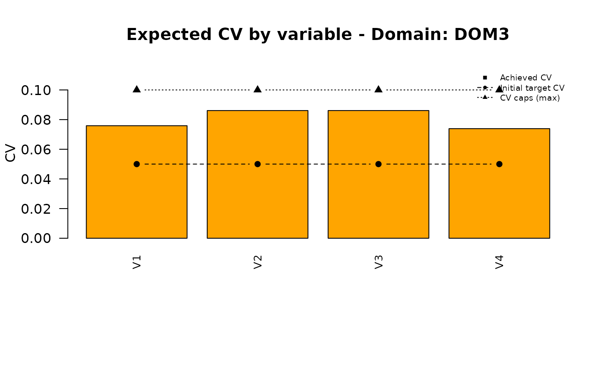
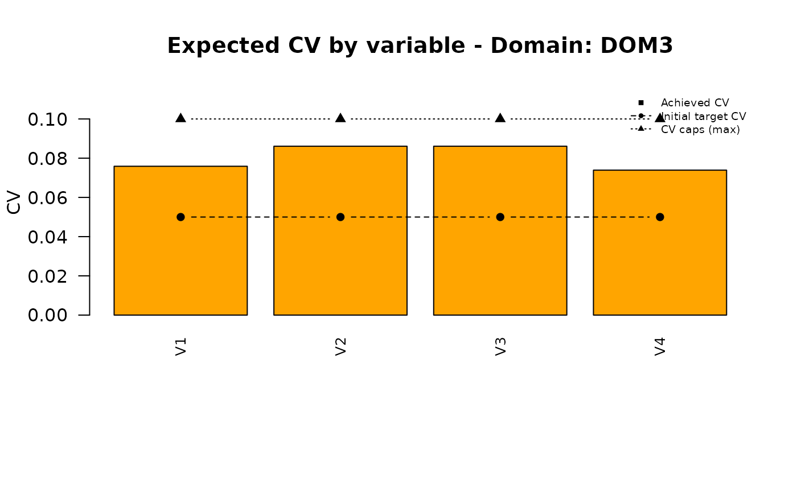
## PNG saved: /home/runner/work/R2BEAT/R2BEAT/vignettes/outputs/domains_nmax_50000_tol_5_t_1.722057_allocation.png
## PDF saved: /home/runner/work/R2BEAT/R2BEAT/vignettes/outputs/domains_CV_and_alloc_nmax_50000_tol_5_t_1.722057342529.pdfNow, the sample size is in line with the budget constraint:
sum(out$allocation$n)## [1] 50000These are the new CVs:
cv_pareto <- out$expectedCV
colnames(cv_pareto)[2:ncol(cv_pareto)] <- paste0("CV",c(1:ncol(cv_pareto)))
write.table(cv_pareto,"./outputs/2.pareto_cvs.csv",sep=",",quote=F,row.names=F)| DOM | CV1 | CV2 | CV3 | CV4 |
|---|---|---|---|---|
| DOM1 | 0.005 | 0.013 | 0.020 | 0.006 |
| DOM2 | 0.019 | 0.034 | 0.037 | 0.015 |
| DOM3 | 0.076 | 0.086 | 0.086 | 0.074 |
3. Get the optimal allocation closer to the proportional one
Consider the last obtained solution:
pareto_alloc <- beat.1st(strata,cv_pareto)
knitr::kable(
pareto_alloc$alloc,
digits = 3,
caption = "Pareto allocation",
format = "html"
) |>
kableExtra::kable_styling(
bootstrap_options = c("striped", "condensed"),
full_width = FALSE
)| STRATUM | ALLOC | PROP | EQUAL | |
|---|---|---|---|---|
| north_1_3 | north_1_3 | 4938 | 2091.890 | 2083.417 |
| north_1_4 | north_1_4 | 5840 | 2374.785 | 2083.417 |
| north_1_5 | north_1_5 | 6661 | 4526.424 | 2083.417 |
| north_1_6 | north_1_6 | 5614 | 1208.778 | 2083.417 |
| north_2_3 | north_2_3 | 3819 | 2320.222 | 2083.417 |
| north_2_4 | north_2_4 | 3743 | 1891.698 | 2083.417 |
| north_2_5 | north_2_5 | 4416 | 4121.281 | 2083.417 |
| north_2_6 | north_2_6 | 3822 | 2249.741 | 2083.417 |
| center_1_3 | center_1_3 | 1127 | 4437.004 | 2083.417 |
| center_1_4 | center_1_4 | 1220 | 5871.453 | 2083.417 |
| center_1_5 | center_1_5 | 1152 | 2556.196 | 2083.417 |
| center_1_6 | center_1_6 | 910 | 352.947 | 2083.417 |
| center_2_3 | center_2_3 | 743 | 2278.037 | 2083.417 |
| center_2_4 | center_2_4 | 743 | 1060.510 | 2083.417 |
| center_2_5 | center_2_5 | 772 | 668.986 | 2083.417 |
| center_2_6 | center_2_6 | 605 | 563.331 | 2083.417 |
| south_1_3 | south_1_3 | 536 | 1377.992 | 2083.417 |
| south_1_4 | south_1_4 | 509 | 1664.088 | 2083.417 |
| south_1_5 | south_1_5 | 496 | 3097.838 | 2083.417 |
| south_1_6 | south_1_6 | 416 | 1286.587 | 2083.417 |
| south_2_3 | south_2_3 | 520 | 1238.405 | 2083.417 |
| south_2_4 | south_2_4 | 543 | 932.580 | 2083.417 |
| south_2_5 | south_2_5 | 492 | 1596.560 | 2083.417 |
| south_2_6 | south_2_6 | 365 | 234.667 | 2083.417 |
| Total | 50002 | 50002.000 | 50002.000 |
We can calculate the Pearson correlation coefficient between the optimal and proportional allocations:
cor(pareto_alloc$alloc$ALLOC[-nrow(pareto_alloc$alloc)],pareto_alloc$alloc$PROP[-nrow(pareto_alloc$alloc)])## [1] 0.3467993We want to get the optimal allocation closer to the proportional one. For instance, we want that the correlation coefficient be increased to 0.9.
To obtain this result, we make use of a particular genetic algorithm, the quantum genetic algorithm, implemented in the R package QGA.
3.1 Fitness function
First, we define the following fitness function:
fitness_cvs <- function(solution,eval_func_inputs) {
strata <- eval_func_inputs[[1]]
vett <- eval_func_inputs[[2]]
cv <- eval_func_inputs[[3]]
vettmin <- eval_func_inputs[[4]]
vettmax <- eval_func_inputs[[5]]
nvals <- eval_func_inputs[[6]]
nvars <- ncol(cv) - 1
cv_corr <- cv
n <- 0
for (k in c(1:nrow(cv))) {
for (m in c(1:nvars)) {
n <- n+1
cv_corr[k,m+1] <- seq(from=vettmin[n],
to=vettmax[n],
by=(vettmax[n]-vettmin[n])/nvals)[solution[n]]
}
}
cv_corr
a <- R2BEAT::beat.1st(strata,cv_corr)
# b <- ks.test(a$alloc$ALLOC[-nrow(a$alloc)],a$alloc$PROP[-nrow(a$alloc)])
c <- cor(a$alloc$ALLOC[-nrow(a$alloc)],a$alloc$PROP[-nrow(a$alloc)])
#---------- Fitness function ----------------
fitness <- c
return(fitness)
}3.2 Setting the parameters
We set the parameters required by the QGA function:
nvars <- ncol(cv_pareto) - 1
vett <- NULL
for (k in c(1:nrow(cv_pareto))) {
vett <- c(vett,cv_pareto[k,c(2:(nvars+1))])
}
vett <- unlist(vett)
vettmin <- vett * 0.65
vettmax <- vett * 1.35
Genome = length(vett)
# Genome = nrow(strata)
nvalues_sol = 16384 # 2^14 ==> 14 qubits
eval_func_inputs = list(strata,
vett,
cv_pareto,
vettmin,
vettmax,
nvalues_sol
)
popsize = 10
generation_max = 100
nvalues_sol = nvalues_sol
thetainit = 3.1415926535 * 0.5
thetaend = 3.1415926535 * 0.025
pop_mutation_rate_init = 1/(popsize + 1)
pop_mutation_rate_end = 1/(popsize + 1)
mutation_rate_init = 1/(Genome + 1)
mutation_rate_end = 1/(Genome + 1)
mutation_flag = TRUE
plotting = TRUE
verbose = FALSE
progress = FALSE
eval_fitness = fitness_cvs
eval_func_inputs = eval_func_inputs
stop_limit = 0.95Some explanations regarding the parameters. The parameters ‘vettmin’ and ‘vettmax’ are fundamental to determine the space of possible solutions.
In fact, consider their values:
vettmin## CV1 CV2 CV3 CV4 CV1 CV2 CV3
## 0.00319410 0.00841165 0.01288560 0.00357630 0.01225900 0.02237235 0.02419040
## CV4 CV1 CV2 CV3 CV4
## 0.00997685 0.04932265 0.05596305 0.05596695 0.04803565
vettmax## CV1 CV2 CV3 CV4 CV1 CV2 CV3
## 0.00663390 0.01747035 0.02676240 0.00742770 0.02546100 0.04646565 0.05024160
## CV4 CV1 CV2 CV3 CV4
## 0.02072115 0.10243935 0.11623095 0.11623905 0.09976635The values in vettmin are the minimum values that the CVs can assume, while the values in vettmax are the maximum ones.
The parameter ‘nvalues_sol’ indicates the number of possible different values considered for each element in the genome: by setting it to 16384, it means that for each precision constraint, 16384 possible values will be considered, the ones obtained by dividing by 16384 the interval between the minimum and the maximum value set for each precision constraint.
The parameter ‘eval_func_inputs’ is a list containing all the information required by the fitness function.
Parameters ‘thetainit’ and ‘thetaend’ are the initial and final values expressed in degrees for the rotation gate used in the quantum genetic algorithm. The rotation is high at the beginning of the iterations (to explore mores solutions), lower at the end (to refine the best solution found).
The same for parameters from ‘pop_mutation_rate_init’ to ‘pop_mutation_rate_end’, that govern the rate of mutation in the solutions.
Very important is the ‘stop_limit’ parameter: the iterations are stopped when this limit is reached. In our case it is set to 0.5: this means that when the correlation coefficient reaches this limit, the algorithm stops and output the related solution.
3.3 Execution of the genetic algorithm
solutionQGA[[2]]$fitness_best[nrow(solutionQGA[[2]])]## [1] 0.9375261
ndoms = nrow(cv_pareto)
par(mfrow=c(1,2))
#plot vett
plot(vett, col="black", type="l",xaxt = "n", ylim=c(min(vettmin), max(vettmax)), xlab="", ylab="", main="Region of variation for CVs") # xaxt = "n" disables the xaxis ticks
# Generate the vector of labels
vector_labels <- paste("DOM", rep(1:ndoms, each = nvars),
"_V", rep(1:nvars, times = ndoms),
sep = "")
# xticks
axis(side=1,at=seq(1,length(vett)),labels=vector_labels, las=2)
# vettmin and vettmax
lines(vettmin, col="red")
lines(vettmax, col="blue")
# add legend
legend("topleft", legend=c("cv_input", "cv_min", "cv_max"), col = c("black", "red", "blue"), lty=1, cex=0.5)
QGA:::plot_Output(solutionQGA[[2]])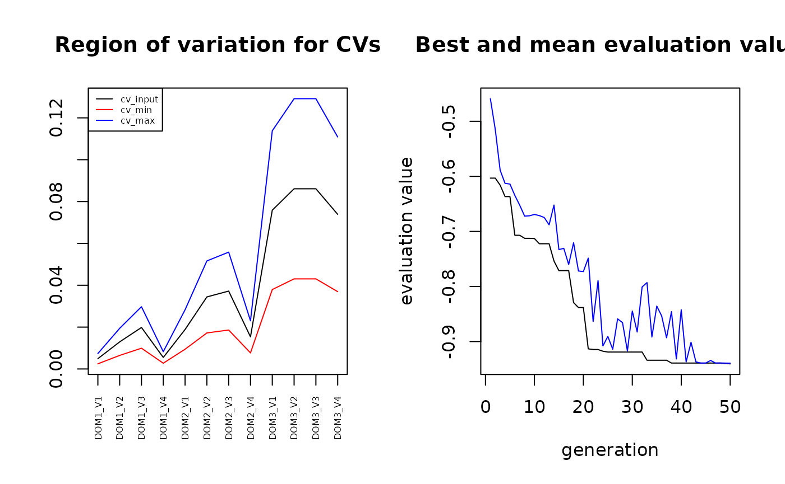
We decode the QGA solution:
solution <- solutionQGA[[1]]
cv_ga <- cv_pareto
n <- 0
nvals <- nvalues_sol
for (k in c(1:nrow(cv_pareto))) {
for (m in c(1:nvars)) {
n <- n+1
diff
cv_ga[k,m+1] <- seq(from=vettmin[n],
to=vettmax[n],
by=(vettmax[n]-vettmin[n])/nvals)[solution[n]]
}
}| DOM | CV1 | CV2 | CV3 | CV4 |
|---|---|---|---|---|
| DOM1 | 0.003 | 0.008 | 0.015 | 0.004 |
| DOM2 | 0.017 | 0.046 | 0.048 | 0.016 |
| DOM3 | 0.100 | 0.106 | 0.116 | 0.091 |
## [1] 516223.4 Re-execution of the “pareto” function
With these new precision constraints, the sample size is slightly greater than the affordable. So, we apply again the “pareto” function:
out2 <- pareto(
strata = strata,
current_cvs = cv_ga,
target_size = 50000,
tolerance = 5,
cv_caps = caps,
beat1cv_fun = beat.1cv_2,
max_iter = 50,
max_same_iter = 20,
plot = TRUE,
plot_dir = "outputs",
plot_prefix = "domains",
show_targets = TRUE,
show_caps = TRUE
)## Start: t=1.0000000000 -> n=55073
## Bracket-up: t=1.2500000000 -> n=43992
## --> Bracket found (t_lo=1.0000000000 infeasible, t_hi=1.2500000000 feasible)
## Bisect 01: t=1.125000000000 -> n=48144
## Bisect 02: t=1.062500000000 -> n=51130
## Bisect 03: t=1.093750000000 -> n=49535
## Bisect 04: t=1.078125000000 -> n=50307
## Bisect 05: t=1.085937500000 -> n=49914
## Bisect 06: t=1.082031250000 -> n=50107
## Bisect 07: t=1.083984375000 -> n=50011
## Bisect 08: t=1.084960937500 -> n=49963
## Bisect 09: t=1.084472656250 -> n=49989
## Bisect 10: t=1.084228515625 -> n=50000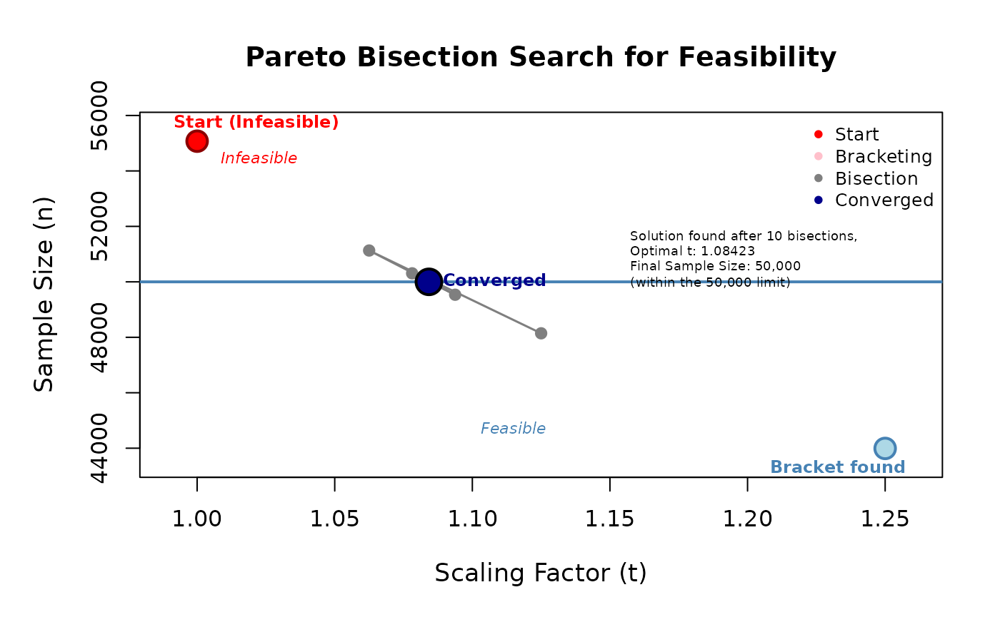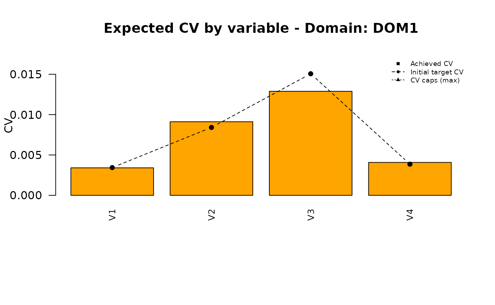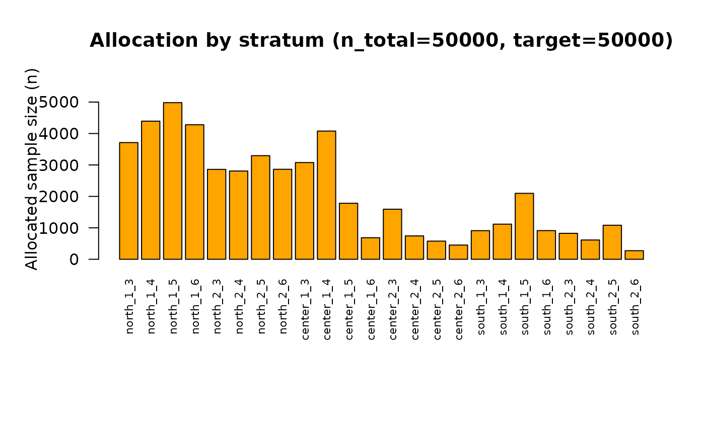
4. Analysis of the final solution
These is the final set of precision constraints:
| DOM | CV1 | CV2 | CV3 | CV4 |
|---|---|---|---|---|
| DOM1 | 0.004 | 0.009 | 0.016 | 0.004 |
| DOM2 | 0.019 | 0.050 | 0.052 | 0.018 |
| DOM3 | 0.100 | 0.100 | 0.100 | 0.098 |
that produces the following sample size:
## [1] 50000in line with the affordable sample size.
What about the closeness of the final optimal allocation to the proportional one?
df <- pareto_alloc$alloc
df <- df[-nrow(df),]
rng = c(0, max(df$ALLOC,df$PROP))
p1 <- plot(ALLOC ~ PROP,
data = df,
main = "Optimal vs Proportional allocation - Before GA adjustment",
ylab = "Optimal",
xlab = "Proportional",
xlim = rng,
ylim = rng,
pch = 21,
bg = "steelblue",
col = "black",
cex = 1.2)
abline(a = 0, b = 1, col = "red", lwd = 2, lty = 2)
text(
x = rng[2] * 0.8,
y = rng[2] * 0.9,
labels = "y = x",
col = "red",
pos = 4,
cex = 0.9
)
fit <- lm(ALLOC~PROP, data = df)
coefs <- coef(fit)
r2 <- summary(fit)$r.squared
abline(fit, col = "darkgreen", lwd = 2)
text(
x = rng[2] * 0.75,
y = rng[2] * 0.5,
labels = sprintf("y = %.2f + %.2f x\nR² = %.2f",
coefs[1], coefs[2], r2),
col = "darkgreen",
pos = 4,
cex = 0.9
)
df <- final_sol$alloc
df <- df[-nrow(df),]
rng = c(0, max(df$ALLOC,df$PROP))
p2 <- plot(ALLOC ~ PROP,
data = df,
main = "Optimal vs Proportional allocation - After GA adjustment",
ylab = "Optimal",
xlab = "Proportional",
xlim = rng,
ylim = rng,
pch = 21,
bg = "steelblue",
col = "black",
cex = 1.2)
abline(a = 0, b = 1, col = "red", lwd = 2, lty = 2)
text(
x = rng[2] * 0.8,
y = rng[2] * 0.9,
labels = "y = x",
col = "red",
pos = 4,
cex = 0.9
)
fit <- lm(ALLOC~PROP, data = df)
coefs <- coef(fit)
r2 <- summary(fit)$r.squared
abline(fit, col = "darkgreen", lwd = 2)
text(
x = rng[2] * 0.75,
y = rng[2] * 0.5,
labels = sprintf("y = %.2f + %.2f x\nR² = %.2f",
coefs[1], coefs[2], r2),
col = "darkgreen",
pos = 4,
cex = 0.9
)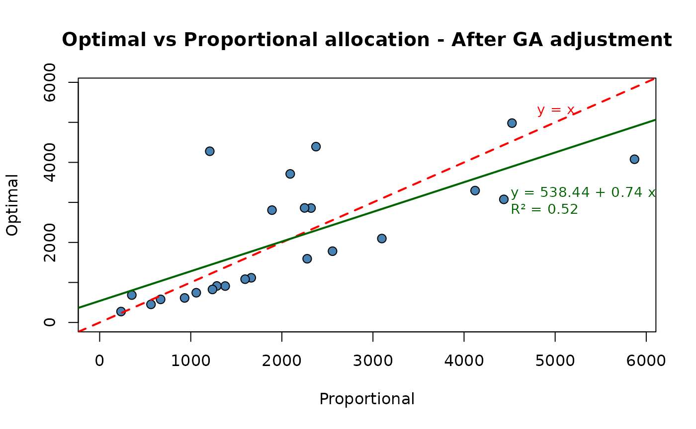 So, we obtained a final optimal solution that is much more close to the proportional one with respect to the one obtained with the first application of the “pareto” function.
It is worth noting that the final correlation:
## [1] 0.7230641is not the one that we indicated to and obtained by the genetic algorithm. This is due to the fact that when re-applying the “pareto” function, we lost some of the correlation. If we want a higher value of it we should get back to the genetic algorithm and set a higher value for the desired correlation.
Finally, we want to compare the different sets of the precision constraints:
the initial ones (those obtained by a time consuming human interaction);
those obtained by applying the “pareto” function to the set of equal CVs;
the final ones, obtained by executing the genetic algorithm to get the resulting optimal allocation closer to the proportional one (and adjusted once again with the “pareto” function.
plot_domain <- function(dom_label, cv_pareto, cv_ga, cv_final,
series_cols = c("red", "blue","yellow")) {
vnames <- names(cv_pareto)
op <- par(no.readonly = TRUE)
on.exit(par(op), add = TRUE)
par(mar = c(8, 4, 4, 2) + 0.1)
ymax <- max(cv_pareto, cv_ga, cv_final, na.rm = TRUE) * 1.15
heights <- rbind(Pareto = cv_pareto, GA = cv_ga, Final = cv_final)
bp <- barplot(
heights,
beside = TRUE,
names.arg = vnames,
las = 2,
cex.names = 0.8,
ylim = c(0, ymax),
main = paste("CV by variable - Domain:", dom_label),
ylab = "CV",
col = series_cols
)
# bp è una matrice 2 x nvar con le x dei bar; prendiamo i centri del gruppo
x_centers <- colMeans(bp)
# linea tratteggiata (cv_ga)
# lines(x_centers, ga_vals, type = "b", lty = 2, pch = 16)
legend(
"topleft",
legend = c("Pareto CVs", "GA CVs", "Final CVs"),
col = c(series_cols),
pch = c(15, 15, 15),
bty = "n",
cex = 0.7
)
}
doms <- unique(cv_pareto$DOM)
ncols <- ncol(cv_pareto)
vcols <- names(cv_pareto)[2:ncol(cv_pareto)]
for (d in doms) {
pareto_row <- cv_pareto[cv_pareto$DOM == d, vcols, drop = FALSE]
ga_row <- cv_ga[cv_ga$DOM == d, vcols, drop = FALSE]
final_row <- cv_final[cv_final$DOM == d, vcols, drop = FALSE]
if (nrow(pareto_row) != 1 || nrow(ga_row) != 1 || nrow(final_row) != 1) {
warning("Dominio ", d, ": righe non univoche nei file. Salto.")
next
}
pareto_vals <- as.numeric(pareto_row[1, ])
ga_vals <- as.numeric(ga_row[1, ])
final_vals <- as.numeric(final_row[1, ])
names(pareto_vals) <- names(ga_vals) <- names(final_vals) <- vcols
plot_domain(dom_label = d, cv_pareto = pareto_vals, cv_ga = ga_vals, cv_final = final_vals)
} 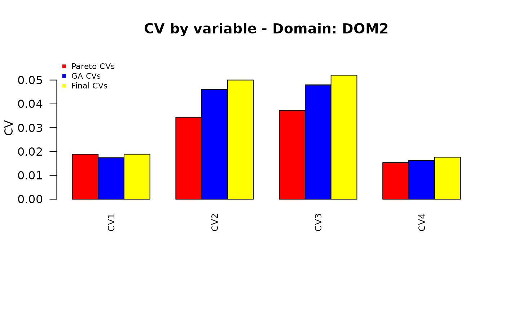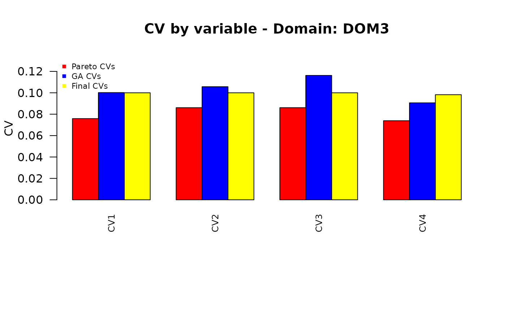
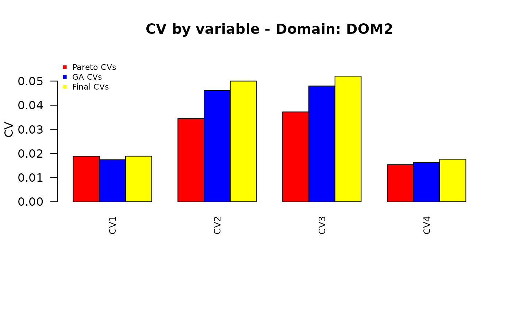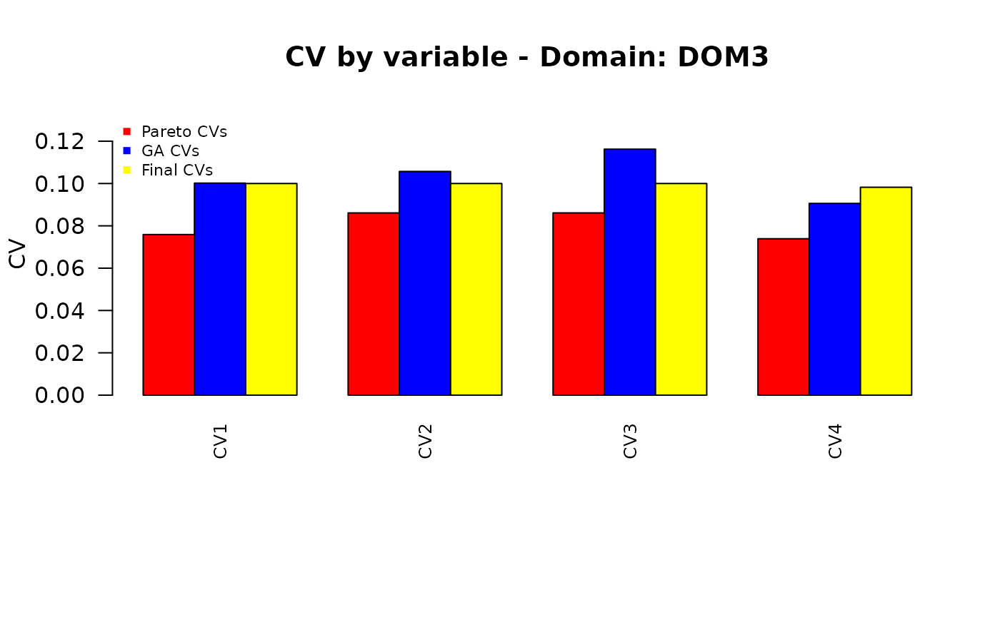